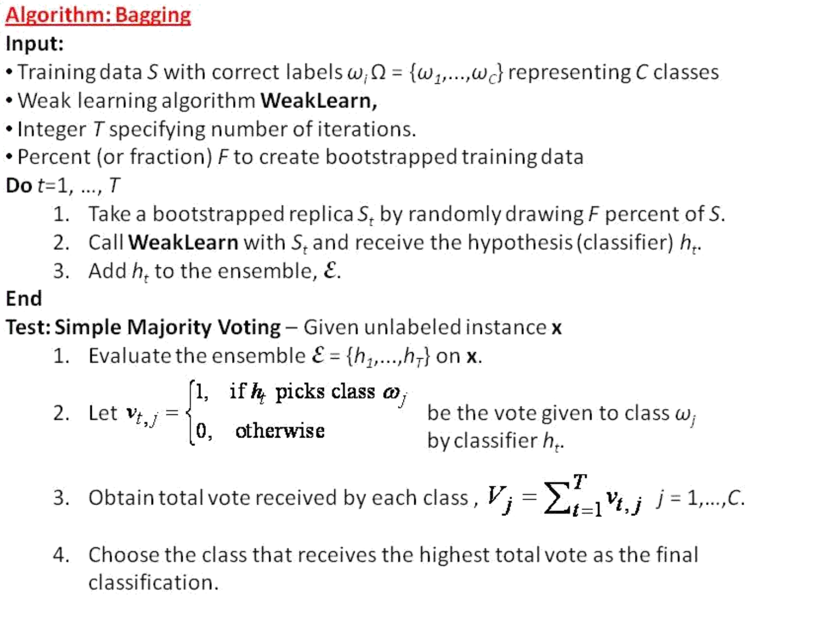

李瀚笙 1338875
第六次实验报告实验目标数据处理分词标签的使用数据降维Bagging 算法的实现代码框架误差分析并行加速Bagging + SVMBagging + DecisionTreeAdaBoost.M1 算法的实现代码框架误差分析AdaBoost.M1 + SVMAdaBoost.M1 + DecisionTree总结讨论
本实验以 Amazon 现实场景中的评论为数据，设计集成学习算法预测评论质量。
本实验报告中所有代码均为示例代码，为了叙述清晰，部分是从函数、类中粘贴出来，不保证单独可以正确执行。作者所使用的环境是 MacOS 12.2.1，Python 3.9，PyCharm 2021.3.1，能正确运行各脚本。
采用实验五讲解中的分词方法。
xdef word_tokenizer(string): # 一般文本列分词 words = nltk.tokenize.word_tokenize(string) # 先切词 # stemmer = nltk.stem.SnowballStemmer('english') # 使用nltk词干化工具 # words = [stemmer.stem(w) for w in words] # 对每个词词干化 lemma = nltk.wordnet.WordNetLemmatizer() words = [lemma.lemmatize(w).lower() for w in words] stopwords = nltk.corpus.stopwords.words('english') # 使用nltk的停用词 words = [w for w in words if w not in stopwords] # 去除停用词 return words
docs = train_df["reviewText"].tolist() # 取出所有文本字符串docy = test_df["reviewText"].tolist()vectorizer = TfidfVectorizer(tokenizer=word_tokenizer)train_x = vectorizer.fit_transform(docs) # 文本向量train_x = hstack((train_x, train_df[["reviewerID", "asin", "overall"]])).tocsr() # 加入其他特征# 测试特征使用训练集上生成的语料库，这样类似真实环境，而且训练集没有出现的词对测试集也没有帮助test_x = vectorizer.transform(docy) # 加入其他特征test_x = hstack((test_x, test_df[["reviewerID", "asin", "overall"]])).tocsr() 分词的过程是比较耗时的，因此将分词结果储存以供后续使用：
xxxxxxxxxxnp.savez("train_x.npz", data=train_x.data, indices=train_x.indices, indptr=train_x.indptr, shape=train_x.shape)np.savez("test_x.npz", data=test_x.data, indices=test_x.indices, indptr=test_x.indptr, shape=test_x.shape) 对于标签数据，鉴于作业要求对某条评论 “可信的概率” 作出估计，我考虑以 votes_up/votes_all 作为标签使用，即取
xxxxxxxxxxtrain_y = train_df["votes_up"] / train_df["votes_all"]在训练的时候，生成以下二元标签供单个分类器使用：
xxxxxxxxxx[1 if y >= 0.9 else 0 for y in train_y]在评估的时候，把多个分类器视作投票的用户，以它们分类 1 的比例作为可信概率与标签进行比较。
对数据使用 TruncatedSVD 进行降维，代码如下：
xxxxxxxxxxpca = TruncatedSVD(n_components=n)train_x = pca.fit_transform(train_x)test_x = pca.transform(test_x)
将 Bagging 算法的框架兑现为代码即可。

xxxxxxxxxxclass Bagging:
def __init__(self, base_algorithm, iterations, bootstrap_fraction): self.classifier = base_algorithm # Class Name self.T = iterations self.F = bootstrap_fraction self.ensemble = []
def fit(self, sample, label, **kwargs): for i in range(self.T): # bootstrap sample_i = [] label_i = [] for j in range(int(len(label) * self.F + 0.5)): id = int(random() * len(label)) - 1 sample_i.append(sample[id]) label_i.append(label[id]) # train classifier new_classifier = self.classifier(**kwargs) new_classifier.fit(sample_i, label_i) # add classifier to ensemble self.ensemble.append(new_classifier)
def predict(self, instance): # evaluate ensemble on instance res = [] for classifier in self.ensemble: res.append(classifier.predict(instance)) # obtain total vote of each class return np.mean(res) # as probability of being helpful # output 1 == the model "votes up" # output 0 == the model "votes down" # sklearn 有个 predict_prob 函数也许可以用？
值得一提的是，这个代码不能处理分词结果输出的 csr_matrix，因为即使使用 .getrow() 方法选出各行，在训练过程中依然有各种问题出现。我使用的解决方法是要么先降维处理，要么传入 .A （大概需要 200G 运行内存完成一次训练），总之算法只处理 ndarray。
通过与 sklearn.ensemble.BaggingClassifier 的使用对比，除了运行速度约慢 25% 之外，二者的效果相近。
分别采用 AUC 和 squared error 度量准确率，代码如下：
xxxxxxxxxxbagging = Bagging(...)bagging.fit(...)results = {}y_predict = [bagging.predict(sample.reshape(1, -1)) for sample in x_test]auc = roc_auc_score([1 if y >= 0.9 else 0 for y in y_test], [1 if y >= 0.9 else 0 for y in y_predict])err = [(pred - test) ** 2 for pred, test in zip(y_predict, y_test)]res[i] = {bagging_svm, auc, sum(err)/len(y_test)}生成提交比赛的 csv 文件代码如下：
x
bagging = Bagging(...)bagging.fit(train_x.A, [1 if y >= 0.9 else 0 for y in train_y])
f = open('result.csv', mode='wt')f.write('Id,Predicted\n')for index, term in enumerate(test_x.A): result = bagging_svm.predict(term.reshape(1, -1)) f.write("%d,%.2f\n" % (index, result))f.close()
运行过程需要运行多次数据相互独立的模型训练，是否可以通过并行加速？但是 sklearn 的 SVC 算法没有 n_jobs= 参数，只能通过并行化循环实现。通过学习示例代码，我改写了上述类：
class BaggingMul(Bagging):
def fit(self, sample, label, **kwargs):
num_cores = multiprocessing.cpu_count() self.ensemble = Parallel(n_jobs=num_cores)\ (delayed(bootstrap)(sample, label, self.classifier, self.F, **kwargs) for i in range(self.T))
def bootstrap(sample, label, classifier, F, **kwargs): # bootstrap sample_i = [] label_i = [] for j in range(int(len(label) * F + 0.5)): # 不可以用 sample 的 len id = int(random() * len(label)) - 1 sample_i.append(sample[id]) label_i.append(label[id]) # train classifier new_classifier = classifier(**kwargs) new_classifier.fit(sample_i, label_i) # add classifier to ensemble return new_classifier将 bootstrap 放在全局位置是为了使它可以 pickle 化；但是运行时仍然报错
x
_pickle.PicklingError: Could not pickle通过查询资料，似乎是因为 bootstrap 中使用的 classifier.__init__ 和 fit 不可以 pickle 化。鉴于 sklearn 中的 BaggingClassifier 也不支持并行，只能对支持并行的单个算法并行训练，这个优化能否实现还是一个问题。而跑基于 Decision_Tree 的模型时 CPU 自然就能跑满，不需要特地进行优化。
有以下四个候选 SVM 算法：LinearSVC，SVC，LinearSVR，SVR。前两个是基于 SVM 的分类器，后两个是基于 SVM 的回归器。Linear... 版本相当于通用版本指定线性 kernel 的情况，但是运行速度会快一些。依次尝试以上各种方法。划分训练集和验证集如下：
xxxxxxxxxxRANDOM_SEED = 0xa192c122x_train, x_test, y_train, y_test = train_test_split(train_x, train_y, test_size=0.2, random_state=RANDOM_SEED)LinearSVC。使用该 kernel，每次迭代都会报警告：
xxxxxxxxxxConvergenceWarning: Liblinear failed to converge, increase the number of iterations.这说明线性 kernel 不够好。
（0）基准：
BaggingClassifier 以默认参数分类后测试集 AUC 为 0.5。（1）先讨论降维的影响。
可以看到降维对 AUC 的影响不大，因此采用降维后的样本数据调参，这样会快一点得到结果。
（2）讨论 T 的影响。
xxxxxxxxxxpca = TruncatedSVD(n_components=20)train_x = pca.fit_transform(train_x)test_x = pca.transform(test_x)res = {}
for i in range(10, 50, 5): print("running k = %d" % i) bagging_svm = Bagging(LinearSVC, i, 1) bagging_svm.fit(x_train, [1 if y >= 0.9 else 0 for y in y_train]) results = {} y_predict = [bagging_svm.predict(test.reshape(1, -1)) for test in x_test] auc = roc_auc_score([1 if y >= 0.9 else 0 for y in y_test], [1 if y >= 0.9 else 0 for y in y_predict]) err = [(pred - test) ** 2 for pred, test in zip(y_predict, y_test)] res[i] = {auc, sum(err)/len(y_test)}得到的结果如下：
xxxxxxxxxx{10: {0.5, 0.2710026340740096},15: {0.5, 0.2518407805933097},20: {0.5, 0.2631460849582418},25: {0.5, 0.17070766105230506},30: {0.5, 0.18214402200417837},35: {0.5, 0.2689292326866453},40: {0.5, 0.19074230169820017},45: {0.5, 0.20343961778124936}}
可以看到在 T=25-30 左右有最低的均方误差，但是 AUC 都是 0.5。分别以 T=20, 25, 30, 35 计算并提交，得到测试集上 AUC 如下：
xxxxxxxxxx{20: 0.5194525: 0.5010830: 0.4663735: 0.47589}
那考虑到随机因素，还是选择 T=25 比较合适。
（3）讨论 F 的影响。
xxxxxxxxxxfor f in range(5, 15, 1): bagging_svm = Bagging(LinearSVC, 25, f/10) ... res[f/10] = (auc, sum(err)/len(y_test))结果如下：
xxxxxxxxxx{0.5: (0.5, 0.25299867744504817),0.6: (0.5, 0.22400908211866713),0.7: (0.5, 0.2512126580261963),0.8: (0.5, 0.23288022489609864),0.9: (0.5, 0.30738046162947713),1.0: (0.5, 0.16901359941199012),1.1: (0.5, 0.1661272800508572),1.2: (0.5, 0.32184415846619335),1.3: (0.5, 0.16232005562577936),1.4: (0.5, 0.27464585787446916)}
从结果可以看出选择 F=1 即可。
（4）讨论 SVC 参数 C 的影响。
xxxxxxxxxxfor c in range(2, 20, 1): bagging_svm = Bagging(LinearSVC, 25, 1) bagging_svm.fit(x_train, [1 if y >= 0.9 else 0 for y in y_train], C=c/10) ... res[c/10] = (auc, sum(err)/len(y_test))结果如下：
xxxxxxxxxx{0.2: (0.5, 0.2624791284236905),0.3: (0.5, 0.23319560905578776),0.4: (0.5, 0.25676870390099277),0.5: (0.5, 0.19560150748196858),0.6: (0.5, 0.19220791246582988),0.7: (0.5, 0.21228180543246514),0.8: (0.5, 0.2558191918191605),0.9: (0.5, 0.22881670286364053),1.0: (0.5, 0.2879784973526365),1.1: (0.5, 0.2020692339995148),1.2: (0.5, 0.1937371031232165),1.3: (0.5, 0.22339350760440546),1.4: (0.5, 0.18045171576669025),1.5: (0.5, 0.21743632141695027),1.6: (0.5, 0.17338010445051866),1.7: (0.5, 0.22892434173756016),1.8: (0.5, 0.19030924611662695),1.9: (0.5, 0.1885123748725587)}
考虑到原本 1.0 的结果比较大，以此估算随机因素影响导致的变动范围，不同的 C 值没有显著的改变，对 C=0.5 和 C=1.5 计算并提交得到 AUC 如下：
xxxxxxxxxx{0.5: 0.451521.5: 0.53185}
似乎更大的 C 值结果更佳。看到 1.9 附近均方误差又降低了，继续尝试更高的 C 值：
xxxxxxxxxx{2.0: 0.538082.5: 0.46572}
因此还是选 C=2.0 比较合适。
SVC。主要考虑使用 Gaussian 核。因为它等效于升维，这个核没法稀疏矩阵使用，要用必须先降维。并且即使降维至 10 维，运行时间仍然长的难以接受，对它的调参讨论就主要集中在基分类器个数 T 上。结果如下：
xxxxxxxxxx{10: (0.5, 0.49228336608415785),15: (0.5, 0.49228336608415785),20: (0.5, 0.49228336608415785),25: (0.5, 0.49228336608415785)}
可以看出虽然运算时间显著加长，但是准确率没有显著变化。奇怪的是，这个结果似乎失去了随机性：不论使用几次都是一模一样的数字。
LinearSVR。这个模型可以不用把 vote_up 的比例调整成 0-1 的 label。
（1）讨论 T 值的影响。
xxxxxxxxxxfor k in range(5, 31, 5): bagging_svm = Bagging(LinearSVR, k, 1) bagging_svm.fit(x_train, y_train.to_numpy(), C=1.5)
y_predict = [bagging_svm.predict(test_sample.reshape(1, -1)) for test_sample in x_test] auc = roc_auc_score([1 if y >= 0.9 else 0 for y in y_test], [1 if y >= 0.9 else 0 for y in y_predict]) err = [(pred - test) ** 2 for pred, test in zip(y_predict, y_test)] print('k=', k, ': auc=', auc, ', err=', sum(err)/len(y_test))得到结果如下：
xxxxxxxxxx{5: (0.625933889716647, 0.09137185040673883),10: (0.5371890415642789, 0.11506828137127474),15: (0.5287612951114661, 0.1151155917019429),20: (0.5455109431790024, 0.0728010014652953),25: (0.5818876348082577, 0.07746103805359553),30: (0.5257648539304445, 0.07320124685431421)}
可以看到就相比 SVC 的情况，SVR 的准确度高很多。且 err 和 AUC 的变化趋势并不一致。最优的似乎是 5。测试集回报的 AUC 如下：
xxxxxxxxxx{5: 0.56579,10: 0.54927,15: 0.53528,20: 0.51654,25: 0.48048}
此外，LinearSVR 可能出现取值不在 0-1 之间的情况，需要予以约束。
（2）讨论维度的影响。取 T=5。
不降维：测试集回报 AUC 为 0.59524。
降维至 20：测试集回报 AUC 为 0.56579。
在其间随机选择几个维度值进行测试：
xxxxxxxxxxfor n in [50, 100, 500, 1000, 10000, 50000, 100000]: pca = TruncatedSVD(n_components=n) ...得到验证集上结果如下：
x{50: (0.5964112735248323, 0.07706760199541933),100: (0.598365172265666, 0.10483597311412463),500: (0.6617466454154642, 0.18450958103968662),1000: (0.5007023933571598, 0.22543262855651072)}
更大的维度会因为内存占用过大被系统杀死。取 n=500 时测试数据集汇报的 AUC 为 0.64219。
SVR 因时间原因不再进行测试。
做了半天离散化才发现 sklearn 的 DecisionTree 不需要离散化。。。。因此可以直接沿用之前的代码。
xxxxxxxxxxfor i in range(10, 50, 5): print("running k = %d" % i) bagging_svm = Bagging(DecisionTreeClassifier, i, 1) bagging_svm.fit(x_train, np.array([1 if y >= 0.9 else 0 for y in y_train])) results = {} y_predict = [bagging_svm.predict(test.reshape(1, -1)) for test in x_test] auc = roc_auc_score([1 if y >= 0.9 else 0 for y in y_test], [1 if y >= 0.9 else 0 for y in y_predict]) err = [(pred - test) ** 2 for pred, test in zip(y_predict, y_test)] print("k=%d, auc=%f, err=%f" % (i, auc, sum(err)/len(y_test)))输出为
xxxxxxxxxxrunning k = 10k=10, auc=0.506248, err=0.232947running k = 15k=15, auc=0.501842, err=0.226772running k = 20k=20, auc=0.502545, err=0.225503running k = 25k=25, auc=0.502222, err=0.223254running k = 30k=30, auc=0.502981, err=0.221488running k = 35k=35, auc=0.501215, err=0.222362running k = 40k=40, auc=0.501595, err=0.221613running k = 45k=45, auc=0.501082, err=0.220823这个结果很奇怪，特别是对于后面几种情况在验证集上的表现都不如 SVM，但是测试集的情况则反之。而且不同的参数在验证集的表现差别不大，不知道其中原因。重新指定随机种子依然如是。鉴于此，本节之后各项验证都去测试集上验证。
考虑到决策树并不擅长利用很分散的信息，将降维的维度进一步减少。取 n=20，k=10 得到测试集上 AUC 为 0.72247，取 k=20 得到测试集上 AUC 为 0.74505，取 k=40 得到测试集上 AUC 为 0.75083，取 k=80 得到测试集上 AUC 为 0.76548，取 k=160 得到测试集上 AUC 为 0.77031，
将 AdaBoost.M1 算法的框架兑现为代码即可。
x
class M1:
def __init__(self, base_algorithm, iterations): self.classifier = base_algorithm self.T = iterations self.ensemble = [] self._weights = []
def fit(self, sample, label, **kwargs): s_weights = [1/sample.shape[0]] * sample.shape[0] # 初始平均权重 for t in range(self.T): # Train a new learner classifier_i = self.classifier(**kwargs) classifier_i.fit(sample, label, sample_weight=s_weights) # Measure the Error pred = classifier_i.predict(sample) error = 0 for wgt, lbl, pbl in zip(s_weights, label, pred): if (lbl - 0.9) * (pbl - 0.9) < 0: # (1) error += wgt if error > 0.5: raise RuntimeError("Choose a better classifier!") # Calculate classifier weight beta = error/(1-error) self.ensemble.append(classifier_i) self._weights.append(beta) # Update sample weight new_s_weight = [] for wgt, lbl, pbl in zip(s_weights, label, pred): if (lbl - 0.9) * (pbl - 0.9) > 0: # (2) new_s_weight.append(wgt * beta) else: new_s_weight.append(wgt) # Normalization sum_norm = sum(new_s_weight) s_weights = [wgt/sum_norm for wgt in new_s_weight]
def predict(self, sample): # 加权均值 pred = 0 for cls, wgt in zip(self.ensemble, self._weights): pred += cls.predict(sample) * log(1/wgt) return pred其中 (1) 与 (2) 处的判断条件是为了防止使用 LinearSVR 的过程中遇到问题。
因为上述 AdaBoost.M1 接口设计与 Bagging 算法一致，因此可使用同一套框架进行训练和测试。
LinearSVC 无法完成执行，会在至多第四次因错误率太高退出。用退出时后台的分类器在 console 中评估预测值，得到 auc 为 0.48853229284676297，squared error 为 0.44572163，均比较差。
LinearSVR 通常能执行 3-5 轮，选取某次运气好执行完 5 轮的分类器，其在验证集上平均的 AUC 为 0.60591043，在测试集上报告的 AUC 为 0.69031。
根据 Bagging 使用过程中发现的规律，两个很慢的分类器只尝试 SVR 一个。
更新：前期拖延太久了。。。这里只跑一个 T=5 的都没能跑完。。。
替换下传给 AdaBoost.M1 的分类器，即得到配合 DecisionTree 的版本。
执行后出现 ZeroDivisionError，原因是验证集上所有分类都正确，因此新的权重都是 0，导致正则化过程中出错。既然出现这个情况，有理由相信各项参数比较合适。
为了避免出现 NaN，给决策树传入最大深度 10，即可正常运行。但是分类结果大部分是 1，测试 AUC 结果为 0.5007。